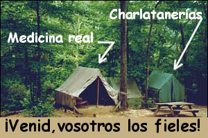

La sombra sabe

Windsor, Ontario, en Canadá, parece estar atrapada en el siglo 14. Un acto de hipnotismo planificado para presentarse en dos escuelas secundarias católicas fue cancelado luego de que el obispo Ronald Fabbro de la diócesis de Londres, Ontario, viajó hacia el pasado para invocar una regla medieval del Almanaque Católico, la cual prohíbe la práctica del hipnotismo “por diversión”, porque “los sujetos hipnóticos pueden ser inducidos a realizar actos inmorales los que, normalmente, no realizarían”. “Esto se ha convertido en una preocupación para algunos, incluyéndome”, dijo el obispo, señalando que la prohibición era para “salvaguardar la virtud del sujeto”. Supongo que esa es la Regla del Mal de Ojo. Y también están prohibidos el ojo de tritón y el dedo de sapo, seguramente.
Blair Robertson era el artista de la hipnosis contratado para aparecer en dos secundarias en noviembre, hasta que supo que los directores de las escuelas habían cancelado las presentaciones. Sin embargo, el reverendo Larry Brunet, pastor del comité católico local, dijo que la iglesia no se opone a los usos “legítimos” de la hipnosis, tales como ayudar a la gente para dejar de fumar o perder peso. Interesante. Ya que sabemos que la hipnosis es inútil para esos propósitos, parece que la Iglesia no sólo cree los aspectos pseudomédicos de esta novedad, sino que también cree en su “poder” para invocar el pecado. ¿No les parece del siglo catorce?
La verdad es que el “hipnotismo” no tiene valor salvo en su papel de facilitar los deseos y necesidades básicas del “sujeto”, deseos que estaban allí para empezar, pero sólo necesitaban algún abracadabra para hacer más aceptable para el sujeto emprender las reformas necesarias. Pero debemos recordar que a la Iglesia le gusta mucho vestirse, emitir cánticos, esparcir incienso e invocar poderes misteriosos. Por lo tanto, supongo que no tenían otra elección salvo creer este disparate; está incorporado en su sistema.
Obviamente, la opinión del obispo tiene mucho peso. “Cuando el obispo habla, nos atañe escuchar y aceptar su guía”, dijo Leo Clark, director de una de las escuelas secundarias. “Ciertamente nos brinda recomendaciones y guía como educadores católicos”.
Si eso es cierto, sólo puedo preguntarme qué otras insensateces se hallan en el currículum de la escuela, y si está o no basada en la evidencia, en lugar de la fe, aunque esta última parece ser muy popular con la administración estadounidense actual, dado que se convierte lentamente en una teocracia…
Decisiones, decisiones
Nuestro buen amigo de australia, Mark Plummer, nos dice:
En la fiesta de Año Nuevo pasé por un festival alternativo llamado CONFEST. Había unos 5000 hippies y otros buscadores de la verdad y la medicina alternativa en este sitio boscoso muy atractivo. Dado que hacía calor (era el verano del hemisferio sur) mucha gente iba descalza. Como el suelo del monte contenía muchos palos afilados y otros objetos y piedras filosos, muchos de los asistentes se cortaron los pies. Los organizadores, con sensatez, prepararon una tienda de primeros auxilios cuyo personal estaba compuesto de practicantes convencionales de la medicina. Muchos sanadores alternativos y similares prepararon tiendas y puestos de curación. Extrañamente, cuando los hippies se cortaban los pies, todos iban derecho a los practicantes de medicina convencional para que les lavaran las heridas, les pusieran antiséptico y los vendaran. Ninguno de ellos fue a un sanador alternativo para que los trataran. ¿Por qué?
Sospecho que Mark ya sabía la respuesta a su pregunta.
Un creyente se descarrila
Un lector que permanecerá anónimo, por razones obvias, escribe:
Tengo el mismo punto de vista sobre lo paranormal que usted. Por eso me molesta tanto que hace varios años mi hermana (ahora de 39 años) de pronto se convirtiera en una chiflada espiritual, y pagó para que Sylvia Browne le hiciera una lectura por teléfono. Hace poco nuestras diferencias extremas de punto de vista estallaron y realmente le hice saber todo lo que pienso de toda la basura paranormal en la que ahora cree. Se ha puesto realmente rara. Ha estado incluyendo toda clase de citas espirituales y bíblicas en los mensajes electrónicos que me envía para intentar explicarse y explicarme su visión del mundo. Ella es una persona muy inteligente, lo que vuelve más confuso el porqué ella resultó víctima de estas cosas.
Hay sólo una explicación posible que puedo imaginar para este súbito cambio de dirección de ella. Poco antes de meterse con lo paranormal sufrió alguna clase de colapso nervioso y tenía algunas tendencias suicidas (sólo pensó en ello). Vive en Minessota; yo vivo en Florida, así que no estaba cerca cuando esto sucedió. No estoy seguro de todos los detalles y ella no le ha contado mucho a nadie. ¿Algo como esto dispara la necesidad de algo a lo que aferrarse? Supongo que puede ser. Esta es la respuesta que me envió cuando la desafié a que leyera su página web sobre la lectura fría (la puntuación es la original):
Silvia ofreció hacer una de sus cínicas pruebas, DESPUÉS de que presente el millón de dólares. Él no tiene un millón de dólares que presentar. ¡Él ha probado ser EL QUE DICE UN MONTÓN DE ESTUPIDECES! Tu fuente es un fraude… un fraude probado. He escuchado al hombre. ¡ES UN CÍNICO! Silvia es una sanadora y psíquica probada. ¡¿Prueba?! ¡¿Hechos?!
¿No significa nada para tí que esta mujer haya salvado la vida de tu hermana dándole un diagnóstico correcto luego de que 4 doctores y 2 hospitales no pudieran?!?!?!?!?!?!?!?!
Yo estaría muerta hoy si no fuera por Sylvia Brown. ¡¿¡¿¡¿No te alcanza?!?!?! Si no te alcanza, parece que también eres un cínico. Esto no está mal, sería Lo Que Es Cierto Para Ti.
¡Hice investigaciones exhaustivas EN TODO ESTO! Piensas que soy una de esos idiotas que mencionas más arriba. Soy una crítica, NO una cínica.
Randi comenta: como saben los lectores, Sylvia Browne ignoró las reglas publicadas de nuestra prueba exigiendo que pusiéramos en depósito el millón de dólares para satisfacer su vanidad y su naturaleza altamente suspicaz. Lo hicimos, haciendo una excepción para esta quejosa tan ruidosa, y le escribimos a Larry King (por correo certificado) en Noviembre del año pasado, pidiéndole que sirviera como agente para ejercer completo control sobre el dinero del premio, y que estaría autorizado a pagarlo a la Sra. Browne si lo ganara. El Sr. King ha declinado responder. Me parece muy significativo.
Quien escribe estas objeciones (que puede ser tan inteligente como dice su hermano que es, pero eso no garantiza que sea lúcida) cae con la misma mentira, es decir, que el premio del millón de dólares no existe. Ya varias veces hemos publicado los medios por los cuales cualquiera puede verificar que el dinero del premio existe, listo para ser pagado. Esta afirmación de que no hay dinero es, simplemente, una mentira, y cualquiera que se haya molestado en examinar las objeciones lo sabe muy bien. Obviamente, esta mujer ha elegido no investigar. Está más cómoda con sus autoengaños.
Lo que sí me interesa es su afirmación de que “Sylvia es una sanadora y psíquica probada”. Je, ¡amigos, eso es exactamente lo que estamos dándole una oportunidad de que pruebe! No hay evidencia alguna que muestre que Sylvia es una sanadora o a psíquica, pero ella puede elegir presentar cualquier evidencia que crea tener, y puede mostrarnos no sólo que estábamos equivocados, sino que perderíamos un millón de dólares. Ahora que lo pienso, ¡el diagnóstico correcto de Sylvia (en contra de la falla que se afirma tuvieron los doctores reales) también la haría acreedora al millón! ¿Por qué no está interesada?
Ya que estamos en el tema de ser un cínico, el diccionario Webster lo define como “una persona que cree que sólo el egoísmo motiva las acciones humanas y que descree de los actos altruistas o puntos de vista desinteresados o los disminuye” [1]. Nunca he tenido esa actitud, y me ofende que esta mujer me asigne sus propios prejuicios. El corresponsal continúa:
¿Qué puedo mostrarle que le sirva de prueba de que realmente tiene usted el dinero para el desafío? Asumo que puede no haber manera de razonar con alguien así que está tan enterrada en sus creencias. ¿Tiene alguna sugerencia de cómo tratar con alguien así dentro de la familia? Ni siquiera tengo ganas de volver a hablarle hasta que “vuelva a la tierra”, pero me temo que eso puede no pasar nunca.
Ojalá tuviera una respuesta que lo satisficiera, señor. Su primera respuesta se contesta con facilidad, aunque es muy difícil hacer que un creyente confirmado hace una simple búsqueda de la información; examinar los términos del desafío en nuestra página web proporciona un medio directo de validar la afirmación de que el millón de dólares existe y está disponible. En cuanto al resto de su problema, no soy el doctor Phil…
Antiguas mesas voladoras
El lector Vincent Gordon trabaja con la Sociedad Estadounidense de Anticuarios en Worcester, Massachusets, y nos cuenta que la sociedad (http://www.americanantiquarian.org) tiene la colección más grande de diarios originales estadounidenses anteriores a 1877, más de 2.000.000 de ejemplares originales. Están abiertos al público para investigación, así que nuestros miembros y lectores son muy bienvenidos a ir allí y realizar investigaciones originales. En el pasado, los visitantes han usado la colección para hallar materiales sobre los fraudes del siglo XIX, espiritismo, las hermanas Fox, y otros temas del interés de la JREF.
Como ejemplo de lo que puede hallarse en sus archivos, el Sr. Gordon nos proporciona este informe:
The Washington Reporter (Washington, Pennsylvania), 4 de mayo de 1853. Volumen 45, nº 43. Primera plana.
¡TABLA SE MUEVE EN ALEMANIA!
El doctor Charles Andree, de Bremen, un científico del más alto carácter, le escribe al Augsburg Allgemeine Zeitung que el movimiento de tablas, en el plano de nuestros vendedores de maravillas, está atrayendo la mayor atención en las ciudades hanseáticas, practicada por personas de todas clases. El doctor Andree nos brinda un relato de un experimento en el cual, aunque incrédulo, él se hallaba presente. Ocho personas, tres hombres y cinco mujeres, se centaron en torno a una mesa central de caoba, de unos 30 kilos de peso. Los asientos estaban tan separados que el contacto de sus adornos no interfería con el proceso; sus manos yacían suavemente sobre la mesa, sus dedos se tocaban para formar una cadena o círculo.
Luego de veinte minutos, una de las damas no pudo soportarlo, y se retiró de la mesa; los otros formaron la cadena de nuevo, y luego de treinta minutos ma´s la mesa empezó a moverse, primero sobre su eje, y luego a través de la habitación en dirección al norte, siguiéndola las personas que componían el círculo. Sus sillas fueron retiradas por algunos espectadores en el momento en que se inició el movimiento. Sintieron que na fuerza ligeramente atractiva acercaba sus manos a la mesa. Luego de que el movimiento continuara durante cuatro minutos, se sugirió que las personas debían tocarse con sus brazos, aunque dejando sus manos en la misma posición. Lo hicieron, y el movimiento cesó. El doctor Andree considera la existencia de una corriente de algún tipo que causa el movimiento, y convoca a los científicos a realizar experimento para la determinación de su naturaleza.
Es una descripción bastante precisa del clásico truco de empujar la mesa, un pasatiempo bastante popular a lo largo de los ‘40, y aún en extensa práctica en el Reino Unido, aunque la novedad parece haber sufrido una declinación aquí en los Estados Unidos en los años recientes. Pruebas muy simples, una de las cuales fue realizada por el científico Michael Faraday (1791-1867) han mostrado que este es un ejemplo de la reacción ideomotora, exactamente el mismo factor psicológico que explica la operación del tablero Ouija, la “escritura automática”, y los varios retorcimientos de los zahoríes. El empujar la mesa, sin embargo, requiere aplicar más fuerza, que proveen los múltiples participantes sentados en torno a la mesa.
Hable con su gato

Me enviaron hace poco esta transcripción de un programa noticioso de CBS- TV. El mensaje es claro.
Uno pensaría que se necesita una licencia para ejercer como terapeuta. Pero el hecho es que la mayor parte de las leyes estatales permiten que casi cualquiera ofrezca servicios de terapia. Tomemos como ejemplo el psicoterapeuta Zoe D. Katze. “¿Hizo que la Asociación Psicoterapéutica Estadounidense certificara a su gato?”, le preguntó al dueño del gato Jim Acosta, corresponsal de la CBS. “Así es”, respondió Steven Kichel, psicólogo.
Todo lo que hizo falta fue una presentación y un currículum incluyendo un doctorado. ¿Por qué la simulación? Para probar que es muy fácil que los aficionados sean certificados como terapeutas. Como un video a quien se atrapó presentando credenciales falsas en un video con cámara oculta. “No importa cuáles sean sus antecedentes”, señaló Acosta.
Los verdaderos expertos advierten que los pacientes deben verificar las credenciales en los sitios web del estado, y examinar los métodos de tratamiento.
Sí, yo diría que es una buena idea. Pero ¿cómo nos protegemos contra los homeópatas, los quiroprácticos que nos ofrecen como cura luz azul, y los que usan “reflexología” para diagnosticar nuestras enfermedades? Yo optaría por el gato…
¿Nunca aprenderán?

Nos contaron que un equipo de fútbol en el Reino Unido ha convocado a una “bruja blanca” para terminar su racha perdedora en los partidos jugados como local. El Club de Fútbol de Frome Town ha tenido un marcador miserable durante los partidos jugados en su cancha de Badger Hill, y a pesar de anotar 31 goles durante los partidos como visitante en lo que va de la temporada, sólo lograron hacer tres goles como locales. Autora de libros tales como “Hocus Pocus” (“Abracadabra”, ¡qué título imaginativo!) y “Love Elixirs” (“Elixires de amor”) agitó sus manos, y luego opinó que el equipo sufría una maldición, o necesitaba algo de aliento. Eso es lo que yo llamo algo definitivo.
¡Un momento! ¿Esta gente no escuchó sobre su propio Reading Football Club cuando llamaron a alguien con una reputación mucho mayor, seguramente, que la de Titania, el renombrado doblacucharas Uri Geller? Tan pronto como este poderoso agente apareció en escena, con los ojos brillantes y concentrados en eliminar todas las influencias malignas que estaban causando los problemas del Reading, el club empezó su descenso hacia el olvido, y nos dicen que el Sr. Geller no ofrecía reembolso alguno. ¡Diablos, él ni siquiera agitó las manos!
Lean los diarios, muchachos, ¡o al menos consulten esta página de vez en cuando!
¿Feng Shui obligatorio?
El lector Chris Wuestfield escribe:
Seguidor que soy desde hace largo tiempo, lo he visto a usted relatar muchos casos en las cuales organizaciones gubernamentales hay apoyado supersticiones o se han basado en ellas. Esto no me preparó para una noticia con la que me encontré. Nunca esperé que un cuerpo gubernamental tan grande o tan cercano como la Legislatura del Estado de California cayera en esto. Aún así parece que un miembro de ese cuerpo ha introducido legislación que tendría el efecto de hacer que el feng shui fuera parte del Código de Normas de Construcción del Estado, de modo que todos y cada uno de los residentes tendrían que desperdiciar recursos construyendo sus hogares de acuerdo con los principios del feng shui. Del artículo, que puede encontrarse en http://www.wnd.com/news/article.asp?ARTICLE_ID=36619 :
“La estructura de un edificio puede afectar el humor de una persona”, afirma la legislación propuesta, “lo que puede influir la conducta de una persona, lo que, a su vez, puede determinar el éxito de las relaciones personales y profesionales deuna persona. […] La meta de la arquitectura feng shui es estudiar cómo el entorno en el que vive la gente afecta sus vida e influye en su calidad de vida.
Muchas veces usted [James Randi] ha promovido la regulación gubernamental de los psíquicos y similares. Creo que aunque está bien intencionado, esto sería un error. Considerando que los políticos que crearían tales regulaciones incluirían a gente como Assemblyman Yee, el propulsor de la ley antedicha, me queda claro que cualquier esfuerzo en tal sentido es tan probable que obtenga lo contrario de lo que se propone como que tenga éxito. En lugar de ello tenemos que buscar maneras de proteger al público por medio de la legislación existente sobre fraude y publicidad veraz, y considerar cómo los practicantes de tales “artes”, como en cualquier otra actividad, deben hacerse responsables de sus actos.
Chris, está perdiendo de vista un aspecto importante. Sí, por mucho tiempo he estado proponiendo licenciar a los “psíquicos” y a estafadores similares. Sin embargo, yo insistiría en un método de licenciamiento que implicara la prueba apropiada del aspirante, exactamente de la misma manera y con el mismo rigor que se hacen pruebas a dentistas, jardineros y todos los profesionales para determinar su calificación para tener una licencia para trabajar. No hay razón por la que los psíquicos deban estar exentos de estos procedimientos (licenciarlos, y que se les hagan pruebas) y aún así parece que permitirles ejercer sin restricción o cuestionamiento algunos de sus actividades podría ser otra de esas iniciativas basadas en la fe…
Pagar por los charlatanes
Un lector que firma simplemente “Bill” parece horrorizado por las cosas que aceptan ciertos servicios de salud:
Hace poco me lastimé la espalda jugando hockey, y mi doctor prescribió terapia física. Decidí ir a una clínica de medicina deportiva, y que me tratara un terapeuta atlético. El terapeuta sugirió que verificara que mi plan de salud en el trabajo cubriera los costos, así que hablé con mi departamento de Recursos Humanos, y, por supuesto, no los cubría. No me molesta; ciertamente puedo costear el tratamiento. Sin embargo, la lista de servicios paramédicos que se cubren es un poquito inquietante. Podría ir y ver a un quiropráctico, un acupunturista, o (lea esto) un practicante de la Ciencia Cristiana. Ni siquiera sabía lo que era esto último hasta que busqué un poco en la web. Después de averiguar lo que son, con seguridad no iré a uno de ellos.
Puede ser hora de buscar otro plan de salud, y que otra persona subsidie a los charlatantes. No se mencionaba la cirugía psíquica o la cobertura de los costos de los cristales sanadores…
Deles tiempo, Bill.
¡Esos locos finlandeses!
La agencia noticiosa Reuters nos dice que en Helsinki, Finlandia, un servicio que prometía responder las plegarias de la gente con un mensaje de texto aparentemente enviado por Jesucristo ha sido clausurado luego de las quejas de la agencia de vigilancia finlandesa de los servicios móviles, MAPEL. El servicio ofrecía respuestas de Jesus contestando a una plegaria en un mensaje de texto con un costo de USD 1,52 por mensaje.
Duró menos de un mes luego de que el servicio se negara a nombrar a la compañía que proveía las respuestas de Jesús. El diario finlandés Ilta- Sanomat, con un verdadero espíritu de escepticismo e investigación, realizó una corta prueba del servicio antes de que fuera cerrado, enviando una plegaria de desesperación que recibió la respuesta: “Recuerda: a menos que sigas el deseo de Dios mucho mejor que los sacerdotes y los faraones, no se te permitirá entrar en el reino de los cielos”. Bueno, ¿qué esperaba por USD 1,52? ¿Campanas y baile de tap?
Amuletos mágicos para mascotas

El lector Mike Teague, quien se describe como “un infiel de Vancouver, Washington” nos dice:
Pensé en compartir una joya que descubrí en un catálogo en un vuelo a Las Vegas, un pendiente que se engancha al collar de su perro para repeler pulgas y garrapatas. La copia dice:
¡GANE LA GUERRA CONTRA PULGAS Y GARRAPATAS! Sólo enganche el medallón “CatanDog” al collar de su mascota y déjelo puesto incluso cuando bañe a su mascota o cuando el veterinario le aplica los rayos X. El medallón de aluminio está cargado con campos de ondas escalatorias que repelen las pulgas y las garrapatas e impiden que nuevas garrapatas se críen en su mascota. Si se engancha luego del baño antipulgas, funciona mejor y se activa entre 7 y 20 días después. No contiene elementos dañinos para sus mascotas o sus niños. Más del 95% de efectividad en perros y gatos de cualquier edad, peso, tamaño o condición. Económico, y se ha comprobado científicamente que dura hasta dos años, luego de los cuales hay que reemplazarlo.
¿”Cargado con campos de ondas escalatorias”? ¿Qué? El sitio de la compañía es http://www.catandogs.net/english
Mike, la parte que me gusta es “95% de efectividad”. ¿Eso significa que este dispositivo milagroso matará 95 de cada 100 pulgas? ¿Tienen idea de cuántas pulgas nuevas pueden generar cinco ambiciosos adultos, en siete días, y ni pensemos en 20?
Para cerrar…
El lector Wilf Campbell me proporciona un cierre adecuado para esta semana:
MI DESTINO SIGUE INTERFIRIENDO CON LO QUE ESTÁ ESCRITO PARA MÍ. ESO SÍ QUE ES KARMA.
¡Qué sabios eran los antiguos!

Notas
Comentarios
Comments powered by Disqus